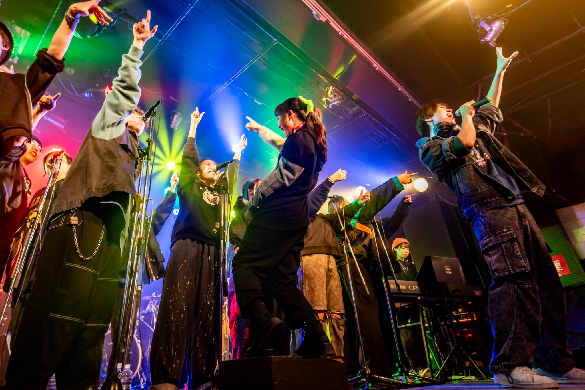

ABOUT

GO∞HIPとは？
GO∞HIPとは？
東北大学を中心とした仙台の学生たちがゴスペルを歌うインカレサークルです。
「ゴスペルを通して、みんなで歌うことの楽しさや音楽の持つパワーを届けたい！」という思いのもとに日々活動しています。
パートや学年に関わらず、いつも笑顔が絶えない明るい雰囲気が私たちGO∞HIPの魅力！
ぜひ私たちと一緒にゴスペルミュージックの楽しさを味わってみませんか？
EVENT SCEDULE
- 4月
- springfestival・合同演奏会
- 6月
- とっておきの音楽祭
- GO∞HIP SUMMER LIVE
- 9月
- 合宿
- 11月
- 仙台ゴスペルフェスティバル
- 12月
- GO∞HIP WINTER LIVE
- and more...
OUR
HISTORY
gospel fellowshipというクワイヤから生まれたGO∞HIP。
教会などで歌っていた学生達が、もっと上手くなりたい、色々な曲を歌いたいと大学内でサークルを立ち上げました。
そこからサークルは年2回単独ライブを行うまでに成長し、毎回学生の中からバンドメンバーを集め様々なゴスペル曲に挑戦！
GO∞HIPには設立当初から歌うことが大好きなメンバーが集まっていました。
それは何年たっても変わることなく今も受け継がれています。
WHAT'S
GODSPEL?
ゴスペルとはアメリカ発祥の音楽ジャンルです。
1930年代に現在のゴスペルが誕生したと言われており、みんなで手をたたいたりステップを踏みながら全身全霊で歌います。
今日のゴスペルはもはや教会の歌では無く、たくさんの人が親しめる前向きな音楽になっています。
様々なルーツがあるとされるゴスペルですが、歌詞の意味はとってもシンプル。
「喜び・感謝・愛・希望・平和」のメッセージです。
GO∞HIPはその熱いメッセージをみなさんに全力でお届けします！！
JOIN US!!
GO∞HIPでは音楽経験がある人もそうでない人も大歓迎です！
仲間と一緒に何かに取り組みたい、
とにかく楽しい雰囲気を求めている、
そんな貴方にはGO∞HIPがぴったり！
ぜひ私たちと一緒に楽しくゴスペルを歌いませんか？